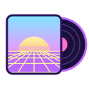
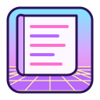
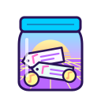

<!doctype html><meta charset="utf-8"><title>Credit Hoarder icons, round 2</title>
<style>body{margin:0;font:13px system-ui,sans-serif}section{padding:20px;display:grid;grid-template-columns:repeat(4,1fr);gap:22px}.dark{background:#000;color:#ddd}.light{background:#fff;color:#222}figure{margin:0;display:flex;align-items:end;gap:10px;flex-wrap:wrap}figcaption{width:100%}.ref figcaption{opacity:.6}</style>
<section class="light"><figure class="ref"><figcaption>Art Station (for reference)</figcaption></figure><figure><figcaption>1 · Tag pile on the sunset</figcaption></figure><figure><figcaption>2 · Pastel hamster</figcaption></figure><figure><figcaption>3 · Credits cassette</figcaption></figure><figure><figcaption>4 · Pastel treasure chest</figcaption></figure><figure><figcaption>5 · Credit roll</figcaption></figure><figure><figcaption>6 · Jar of credits</figcaption></figure></section><section class="dark"><figure class="ref"><figcaption>Art Station (for reference)</figcaption></figure><figure><figcaption>1 · Tag pile on the sunset</figcaption></figure><figure><figcaption>2 · Pastel hamster</figcaption></figure><figure><figcaption>3 · Credits cassette</figcaption></figure><figure><figcaption>4 · Pastel treasure chest</figcaption></figure><figure><figcaption>5 · Credit roll</figcaption></figure><figure><figcaption>6 · Jar of credits</figcaption></figure></section>
